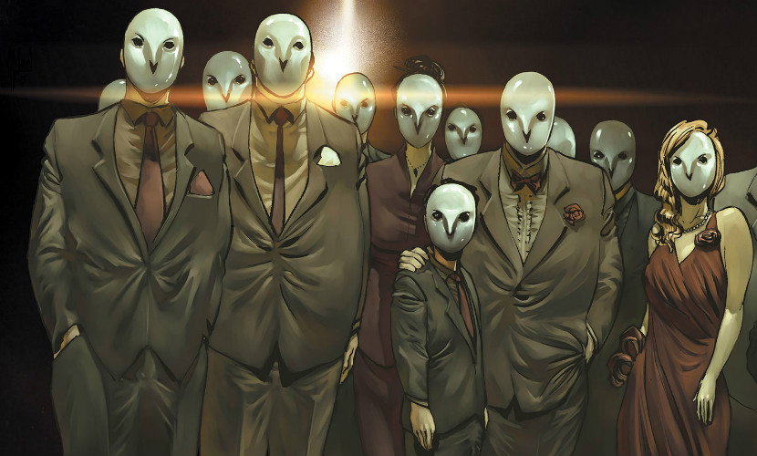
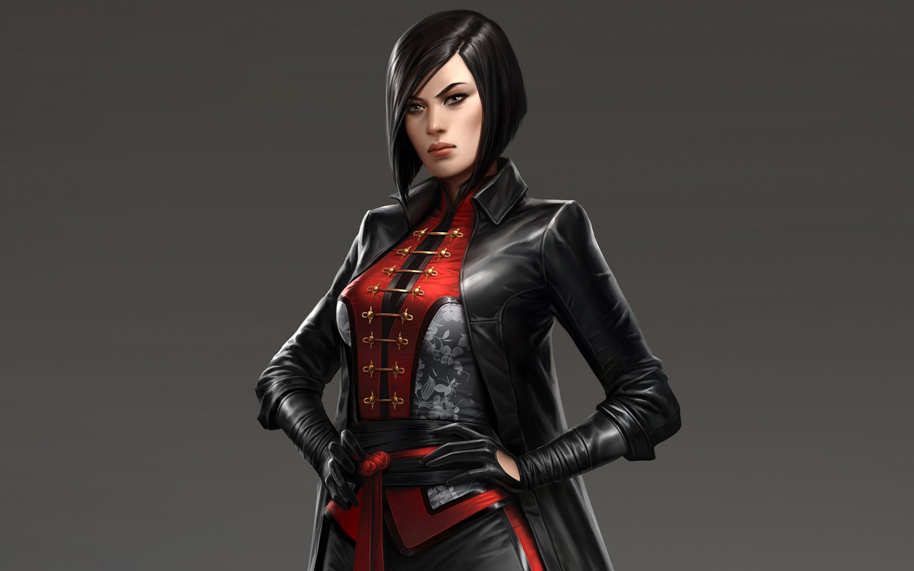
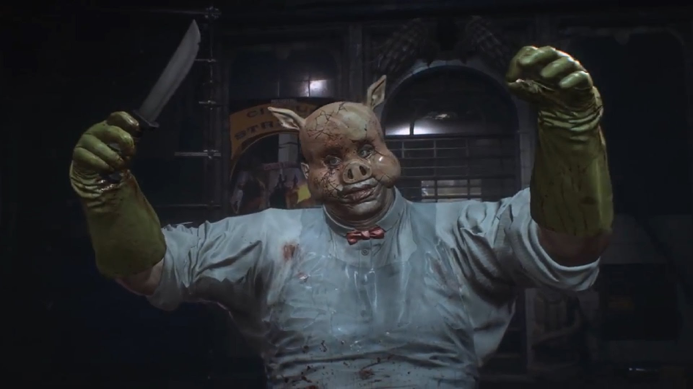
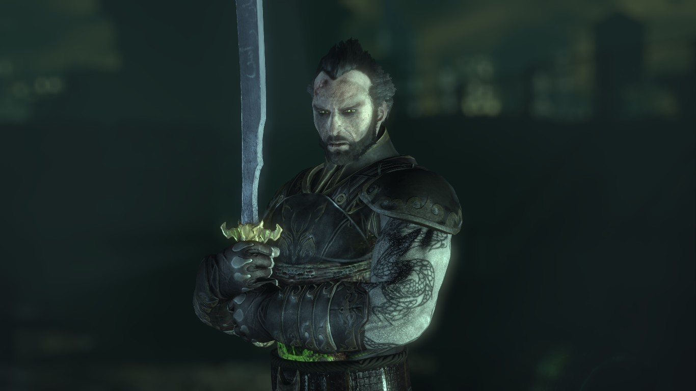

GOTHAM (SERIE DE TV)
Gotham es la historia del origen de los grandes súper villanos y vigilantes de DC Comics, revelando en cada nuevo capítulo lo que nunca se ha dicho.
Sigue el ascenso de James Gordon por una ciudad peligrosamente corrupta, que se tambalea al borde de la maldad y narra el nacimiento del superhéroe protector de Gotham: Batman.
ROBINS
TRAJES DE BATMAN

VILLANOS
-
ACERTIJO (Edward Nigma)
Una mente maestra criminal con una extraña compulsión por retar a sus víctimas o enemigos dándoles pistas sobre sus crímenes en forma de acertijos, enigmas o adivinanzas. Batman se ha vuelto un digno adversario de sus trampas.
-
BANE
A raíz de un experimento con la droga Venom, el enmascarado Bane adquirió una fuerza sobrehumana. Su poder e inteligencia hacen de él uno de los adversarios más temibles de Batman, y ha sido uno de los pocos villanos que ha logrado lesionar al Caballero Oscuro rompiéndole la columna.
-
CARA DE BARRO (Basil Karlo)
Fue un actor que se vuelve loco cuando se entero de una nueva versión de un clásico film de terror que él había protagonizado en la que no lo habían incluido. Para vengarse, se puso la máscara del villano de la película, Cara de Barro, y se embarco una serie de asesinatos entre los actores y el equipo de la nueva versión, matando a los actores en el orden y la forma en que morirían en la película. Más tarde obtuvo poderes cambiantes de forma y se convirtió en el último Cara de Barro.
-
DEADSHOT (Floyd Lawton)
Es un asesino suicida. Es considerado como el segundo mejor asesino del Universo DC, siendo el primero Deathstroke. Posee una puntería extraordinaria, siendo capaz de dispararle a una mosca a kilometros de distancia o a un auto en movimiento. El único que le ha hecho fallar un disparo, es Batman, lo cual lo coloca en el primer lugar de su lista negra.
-
DEATHSTROKE (Slade Wilson)
Fue engañado por el ejército para formar parte de un experimento para crear supersoldados. El experimento fue un éxito para crearle grandes habilidades, pero causó grandes estragos en su personalidad. Sus superiores decidieron darlo de baja por insubordinación y fue en ese momento cuando Slade decidió convertirse en un mercenario, con la posibilidad de poder establecer sus propias reglas.
-
DOS CARAS (Harvey Dent)

Fue procurador de distrito hasta que su desorden de personalidad múltiple latente tomó la totalidad del control cuando la mitad de su cara fue horriblemente deformada, y comenzó a cometer crímenes relacionados con la dualidad y los lados opuestos siendo todas las decisiones importantes determinadas por una moneda de dos caras.
-
EL SOMBRERERO LOCO
Un científico llamado Jervis Tetch que se especializa en neurociencia y que desarrolló hardware para controlar el cerebro e inducir estados hipnóticos.
-
ESPANTAPÁJAROS (Jonathan Crane)
Un científico renegado que se especializa en la naturaleza del miedo. Emplea artefactos y técnicas especiales de su propio diseño para realizar sus delitos.
-
GATÚBELA (Selina Kyle)
Es una ladrona talentosa de joyas con un gusto por el lujo. Ella es extremadamente ágil y acrobática. Aunque es considerada tradicionalmente como una villana, ella ha sido presentada más como una "anti-héroe" en publicaciones posteriores.
-
HARLEY QUINN
La Dra. Harleen Quinzel fue la psiquiatra de El Joker en el Asilo Arkham hasta que ella terminó enamorada de él y, luego, se reinventó como su psicótica novia, Harley Quinn. Es sádica, violenta e impredecible. Es una habilidosa gimnasta y una experta en las artes marciales, siendo una dura oponente en el combate cuerpo a cuerpo.
-
HIEDRA VENENOSA
Pamela Lilian Isley, era una bótanica que se conviertió en una híbrida mitad planta y humana por un experimento fallido. Puede controlar telequinéticamente a toda clase de plantas y se refiere a ellas como sus "bebés", siendo capaz de matar con tal de defenderlas. De gran belleza física, utiliza feromonas para seducir a hombres y mujeres y según algunas versiones, sus labios son altamente venenosos.
-
HOMBRE CALENDARIO
Es conocido por cometer crímenes que corresponden en días festivos y fechas importantes. Muchas veces viste trajes que se correlacionan con la fecha del crimen designado.
-
HUGO STRANGE
El profesor Hugo Strange es un psicólogo demente que utiliza su maestría en la química para crear un suero que convierte a sus víctimas en bestias sin sentido que obedecen todas sus órdenes. Es uno de los pocos que conocen la verdadera identidad de Batman.
-
HUSH
Thomas Elliot era amigo de la infancia de Bruce Wayne. Cuando falló en el intento de matar a sus propios padres, gracias a las habilidades quirúrgicas de Thomas Wayne, padre de Bruce, Elliot culpó a este último y se propuso arruinarle la vida. Su odio se dirige tanto a Batman como a Bruce Wayne, sin que sepa que se trata de la misma persona.
-
JOKER (Guasón)
La apariencia de El Joker y una gran sonrisa ocultan una mente tortuosa que crea la mayor cantidad de problemas para su archi-enemigo, Batman. Su arsenal de armas incluyen cartas-navajas, flores de ácido, y el gas de la risa. Él es el mayor enemigo de Batman, así como el más famoso y recurrente.
-
KILLER CROC
Waylon Jones, era un huérfano criado por una tía alcohólica. Desde pequeño sufrió una rara mutación que afectó su cuerpo, asemejándolo a un caimán. Conforme fue perdiendo su humanidad, se convirtió en un temible criminal, poseedor de una monstruosa fuerza, sentidos agudos y la habilidad de respirar bajo el agua.
-
LA CORTE DE LOS BÚHOS
Una sociedad secreta que ha operado por más de cien años controlando en la clandestinidad los destinos de Gotham City, en los cuales Batman es una constante amenaza para sus planes delictivos.
-
LADY SHIVA
Una asesina mercenaria que una vez entrenó a Batman. Posiblemente es la mejor artista marcial viva en el universo de DC Comics.
-
LUCIÉRNAGA (Garfield Lynns)
Es un huérfano que se convirtió en un pirómano, desarrollando un traje resistente al fuego con un lanzallamas para proseguir su pasatiempo. Él era conocido originalmente como un astuto criminal que inventaba numerosas armas relacionadas con la luz para cometer sus crímenes.
-
MAN-BAT
Un científico, Kirk Langstrom, se convierte periódicamente en un murciélago antropomórfico, y le provoca problemas a Batman a pesar de ser también un aliado ocasional.
-
MÁSCARA NEGRA
Llamado Roman Sionis, es un señor del crimen en Gotham y uno de los enemigos de Batman. Lidera sus organizaciones criminales de forma despiadada y tan efectiva como si de un negocio se tratara, habiendo tomado la mayor parte de los bajos fondos de Gotham.
-
PINGÜINO (Oswald Cobblepot)
Un hombre bajo y obeso de nariz puntiaguda que dice ser un caballero del crimen. Suele usar un esmoquin, sombrero de copa y un monóculo, además lleva consigo una variedad de paraguas trucados que esconden armas de fuego.
-
PROFESOR PYG
Un científico obsesionado con transformar a sus víctimas en extrañas "muñecas" lobotomizadas.
-
RA'S AL GHUL
Un eco-terrorista de siglos de edad que conoce la identidad secreta de Batman; Ra's Al Ghul desea que Batman se case con su hija Talia Al Ghul, y se convierta en su sucesor.
-
RED HOOD
Anterior personalidad del Joker (como líder de una banda delictual), y actualmente del segundo Robin, Jason Todd. Ahora Red Hood es un anti-héroe que lucha contra el crímen, pero asesinando a los criminales.
-
SOLOMON GRUNDY
Un zombie de grandes dimensiones y fuerza sobrehumana capaz de volver de la muerte una y otra vez.
-
SR. FRÍO (Victor Fries)

Anteriormente un científico experto en criogenia; se trastornó al enfermarse su amada esposa Nora, a quien preservó criogénicamente hasta que lograra descubrir una cura para su enfermedad. Un accidente en el proceso provocó que su cuerpo solo funcionara a temperaturas debajo del punto de congelación por lo que debe utilizar un traje especial de refrigeración y usa una tecnología similar para las armas y los aparatos que diseña.
-
VICTOR ZSASZ
Es un asesino en serie que lleva la cuenta de sus víctimas haciéndose una cicatriz nueva con su cuchillo por cada víctima.
TOP 5 LAS MEJORES PELÍCULAS ANIMADAS
1) Batman:
La máscara del fantasma
Cuando tres los más temidos líderes de la mafia de Ciudad Gótica son sistemáticamente asesinados uno por uno, se teme aun mas lo peor: que Batman es el culpable de estos crímenes.
2) Batman: El Regreso
del Caballero Oscuro - Parte 1
Después de que el gobierno haya prohibido la actividad de los superhéroes, Batman se vio obligado a retirarse. Diez años después, Gotham City está plagada de crimen y aterrorizada por una banda conocida como los Mutantes.
2) Batman: El Regreso
del Caballero Oscuro - Parte 2
Con Batman de regreso como el centro de atención, la cobertura de los medios de comunicación han despertado un mal aun peor: El Guasón!, y junto a eso se avecina el Hombre de Acero, aunque esta vez tienen a Batman en la mira.
3) Batman:
Año uno
La historia relata los inicios de la carrera de James Gordon con el Departamento de Policía de Gotham City con la aparición de Bruce como Batman.
4) Batman del futuro:
El Regreso del Guasón
Joker no murio y ahora es mas fuerte. Terry MacGinnis el Batman del Futuro se enfrentara al enemigo de su mentor Bruce Wayne.
5) Batman:Bajo la capucha roja
En Gotham City aparece un hombre conocido como Red Hood, mitad vigilante mitad criminal, comenzará a hacer el mismo trabajo que Batman, aunque bajo otro código moral: matar es una opción.